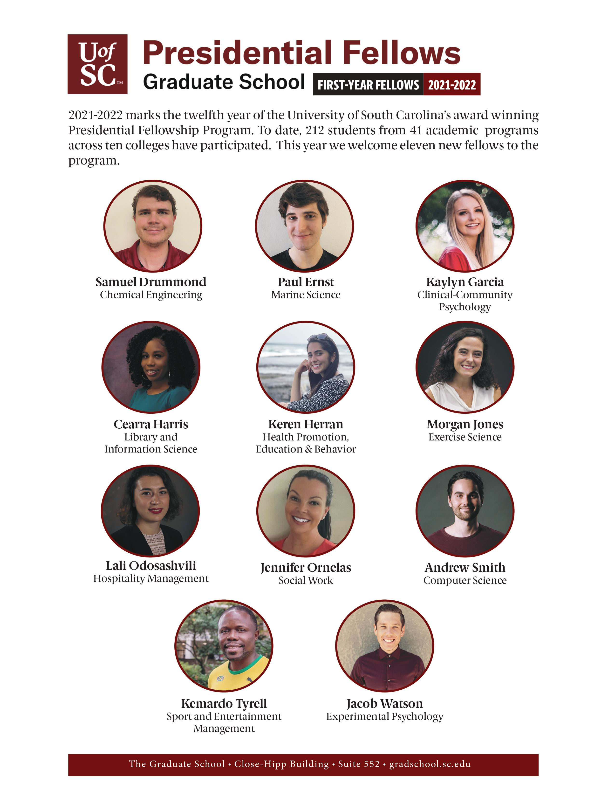

The Graduate School is pleased to announce the University of South Carolina’s 2021-2022
Presidential Fellows. The Presidential Fellowship is UofSC’s most prestigious
university-wide award for promise of excellence at the graduate level. Presidential Fellows
are exemplary scholars and leaders on campus. Unique among peer institutions for its reach
across disciplines and focus on professional development, the Presidential Fellowship awards
supplemental stipends totaling up to $32,000 for doctoral students (awarded over 4 years)
and $20,000 for MFA students (awarded over 5 semesters). This award is in addition to
fellowships and assistantships students receive from their academic programs.
